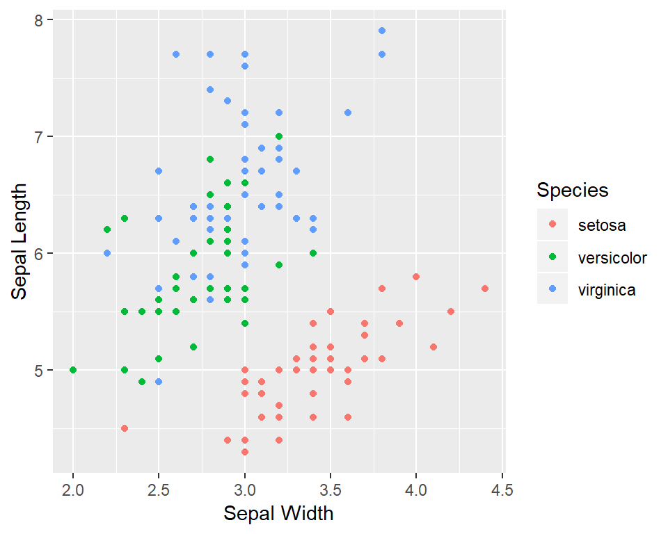

This course is part of the FAES Graduate School and is being offered Fall 2018. Two sessions are being offered this term, Wednesdays 5-7 and 7-9 pm.
Contact info:
There is a Slack Channel associated with this class. Please contact Joe Jessee (jjessee1@jhu.edu) if you want access
New blog post (2018/11/16): Function documentation
R is one of the most popular programming languages for data science and statistics. It is a free and open source language available for all major operating systems. It is extensible through a packaging system that has resulted in over 12,000 user-contributed packages available on CRAN.
In this course we will provide a practical approach to learning R using examples, with the intention to get you using R for your data analyses, data visualization and reporting as quickly as possible. We will try to avoid the more esoteric and “computer science-y” aspects of this programming language. We hope this approach and personal practice enables you to get started using R for your own work, find resources you may need beyond this course to help you answer your particular questions, and develop workflows for your data analyses that allow you to generate tables and figures for research papers, for example.
The instructors have both been using R in their daily work at NIH and earlier for many many years and have a pretty detailed knowledge of R’s advantages, pitfalls, tricks and shortcuts. Don’t hesitate to reach out and ask your questions.
library(ggplot2)
data(iris)
ggplot(iris, aes(Sepal.Width, Sepal.Length, color=Species))+geom_point()+
labs(x='Sepal Width', y = 'Sepal Length', color='Species')
This website is written using R, R Markdown and various packages provided by RStudio. The source code is available on GitHub